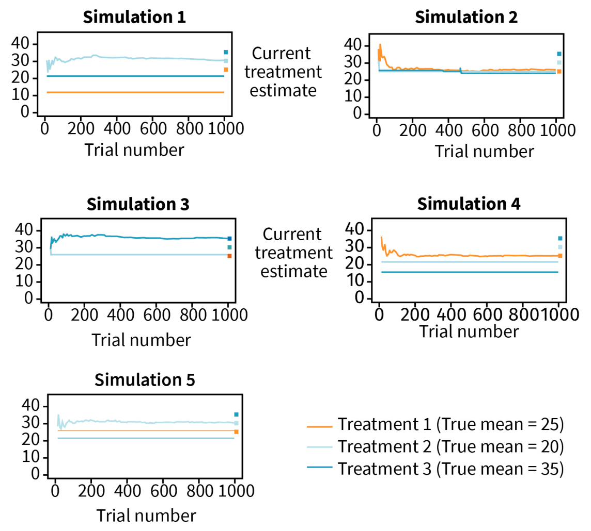
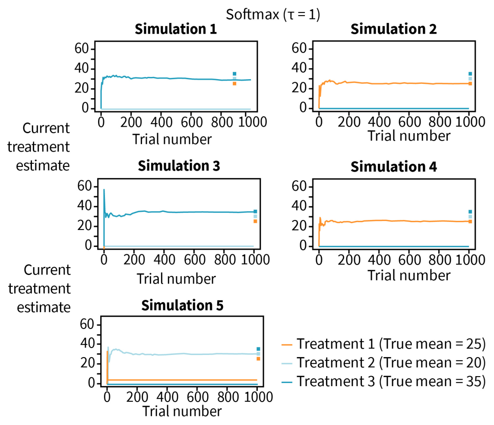
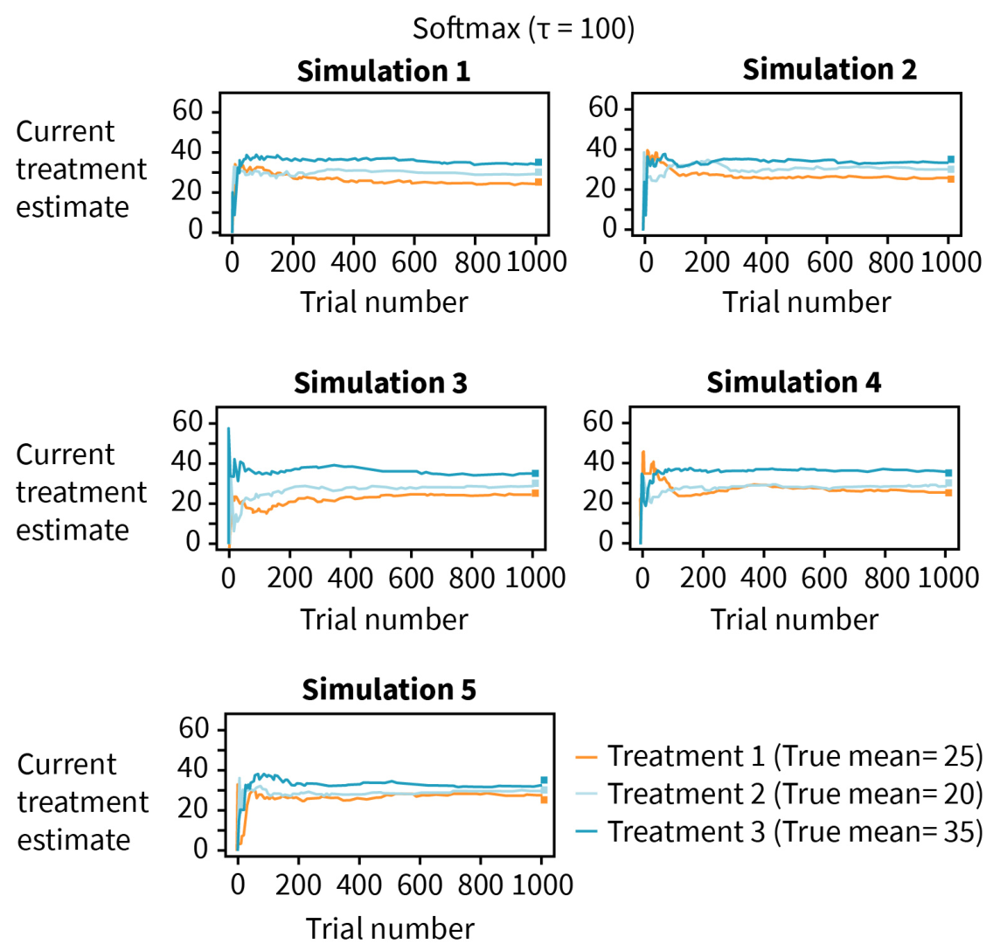
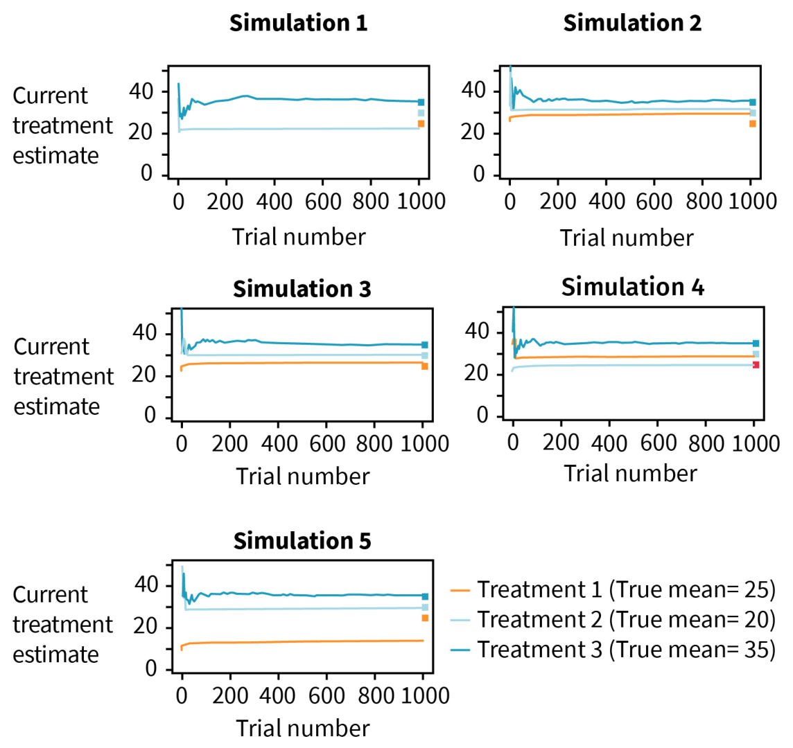

DLMAIRIL01 - Source-derived printable review sheet
Condensed from the same learning note. No additional teaching topics or official examination questions. Formulas and fonts render offline.
Effective bandit policies combine current reward estimates with continuing exploration; epsilon-greedy and softmax force exploration, gradient methods adjust relative preferences, and uncertainty indices such as UCB1 favor both promising and under-sampled arms.
Source visual caution: the text specifies the second arm's mean as 30, while the original simulation-figure legends label Treatment 2's true mean as 20. The original images are preserved, and the notes do not silently change either supplied value. The frozen-ranking lesson does not depend on resolving that mismatch.
| Term | Meaning |
|---|---|
| Forced exploration | Explicitly preserve sampling of alternatives to the current best estimate. |
| Vanishing exploration | Reduce exploration while retaining enough repeated sampling. |
| Temperature | Softmax scaling that controls how strongly the best estimate dominates. |
| Preference | A relative score used to form an action probability. |
| Baseline reward | Average reward used for relative preference updates. |
| Index policy | Select the arm with the largest independently calculated arm index. |
| Confidence interval | A two-sided interval with specified sampling coverage. |
| Upper confidence bound | A one-sided bound on a plausible upper parameter value. |
| UCB1 | Reward estimate plus a count- and total-time-dependent uncertainty bonus. |
Softmax:
Vanishing epsilon-greedy exploration requires the source condition .
UCB1:
Gradient preferences use reward minus a baseline; uncertainty indices combine estimated reward with an exploration bonus.
For the source normal-sample example:
The corresponding 95% one-sided upper bound is
The two upper numbers differ because a two-sided interval splits the excluded probability between both tails, whereas a one-sided upper bound uses the single relevant tail.
Study these with the detailed explanation in the linked Obsidian note.




Answer before expanding. Open the answers before printing to include them.
Arm 3 is initially underestimated and then receives no new samples to correct its ranking.
Permanent neglect of alternatives based on inaccurate initial estimates.
It keeps selecting inferior exploratory arms even after accurate identification.
Epsilon tends to zero but its sum over stages remains infinite.
High temperature approaches uniform exploration; low temperature approaches greedy selection.
Relative action preferences adjusted using reward minus a baseline.
The common exponential factor cancels in numerator and denominator.
Current reward estimate and an uncertainty or exploration bonus.
It assigns coverage to one relevant tail rather than splitting it between two tails.
Approximately 27.52 to 41.68.
Approximately 40.0.
The square root of two log total prior pulls divided by that arm's prior pull count.
The numerator uses overall time; the denominator uses observations of the particular arm.
No; the source contrasts it with the normal-theory confidence index.
Learning note: 03_unit_3_bandit_problems/02_multiple_arm_bandit_problem.
Course book pp. 118-134. Printed page + 2 = PDF viewer page. Personal-study use.